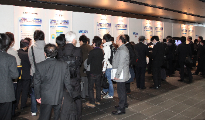
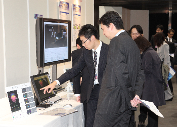
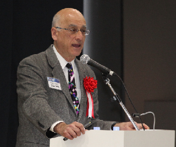
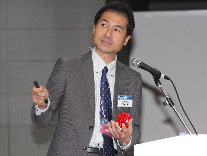
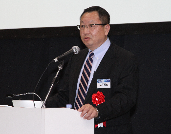
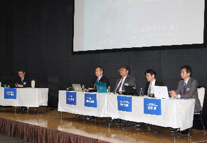

O3シンポジウム2014
日時：2014年3月14日【終了】
場所：アキバ・スクエア（東京・秋葉原）
平成25年度におけるプロジェクトの成果をご覧いただくことを目的として、O3シンポジウムを開催しました。
会場では、研究開発の概要や平成25年度の活動成果に関するパネル展示や、ネットワーク可視化やマルチレイヤ連携に関するデモンストレーション展示を行いました。


また、メインステージにおいて、Open Networking Foundation Executive Director のDan Pitt氏をお招きし、SDNやOpenFlowの最新動向、ONFの取り組み、O3プロジェクトに期待すること等についてご講演いただきました。

次いで、本プロジェクトの代表として、日本電気株式会社 情報・ナレッジシステム研究所 岩田 淳 所長代理より、平成25年度の研究活動に関する成果について発表しました（発表資料）。

さらに、CASL代表の三上哲郎氏をお招きし、OSS（Open Source Software）活動に欠かせない人材育成について、グローバルな視点からご講演いただきました。

この他、三菱総合研究所の中村 秀治氏にモデレートいただき、「OSS時代のソフトウェア＆ネットワーク人材育成」をテーマとして、先の三上氏と岩田に加え、東京大学の関谷 勇司 氏、レッドハット株式会社の中井 悦司 氏をパネラーに迎え、パネルディスカッションも行いました。

当日は天候にも恵まれ、400名以上の方にご来場いただくことができました。
お運びいただきました皆様、誠にありがとうございました。